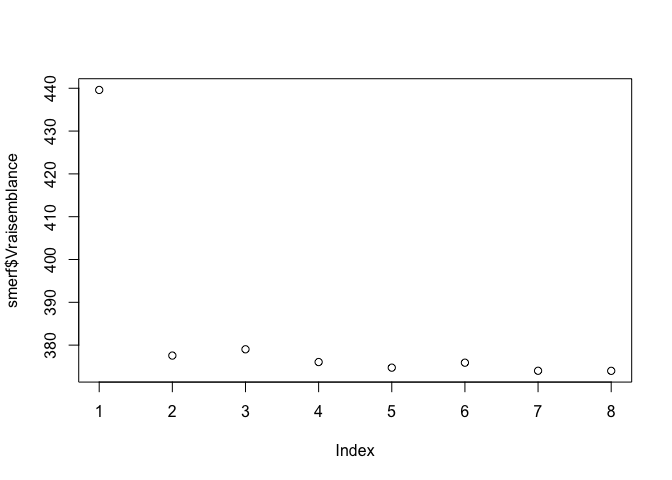

The goal of LongituRF implements Random forests for longitudinal data using stochastic semiparametric miced-model
Installation
You can install the development version of LongituRF from GitHub with:
# install.packages("devtools")
devtools::install_github("sistm/LongituRF")Example
Simulate longitudinal data according to the semi-parametric stochastic mixed-effects model
library(LongituRF)
set.seed(123)
data <- DataLongGenerator(n=20) # Generate the data composed by n=20 individuals.Train a SMERF model on the generated data. Should take ~ 50 seconds The data are generated with a Brownian motion, so we use the parameter sto=“BM” to specify a Brownian motion as stochastic process
smerf <- MERF(X=data$X,Y=data$Y,Z=data$Z,id=data$id,time=data$time,mtry=2,ntree=500,sto="BM")
#> [1] "coucou"
#> [1] 0
#> [1] "coucou"
#> [1] 0
#> [1] "coucou"
#> [1] 0
#> [1] "coucou"
#> [1] 0
#> [1] "coucou"
#> [1] 0
#> [1] "coucou"
#> [1] 0
#> [1] "coucou"
#> [1] 0
#> [1] "coucou"
#> [1] 0
#> [1] "coucou"
#> [1] 0
#> [1] "stopped after 9 iterations."is the fitted random forest (obtained at the last iteration).
smerf$forest
#>
#> Call:
#> randomForest(x = X, y = ystar, ntree = ntree, mtry = mtry, importance = TRUE)
#> Type of random forest: regression
#> Number of trees: 500
#> No. of variables tried at each split: 2
#>
#> Mean of squared residuals: 0.4005203
#> % Var explained: 97.57are the predicted random effects for each individual.
smerf$random_effects
#> [,1] [,2]
#> [1,] -0.46545632 -1.9584240
#> [2,] -0.60530661 -2.0561015
#> [3,] 0.62433379 2.5974150
#> [4,] -0.65495056 -1.9787038
#> [5,] 0.46485020 1.5597098
#> [6,] -0.49842183 -1.3231947
#> [7,] -0.75897409 -1.5594130
#> [8,] -0.13052697 -0.6619248
#> [9,] 0.47026042 1.1258680
#> [10,] 0.62681822 2.7196653
#> [11,] -0.67647906 -1.4174617
#> [12,] -0.04658720 1.0042308
#> [13,] -0.06078194 0.6178129
#> [14,] 0.03773176 0.4135450
#> [15,] -0.16392902 -0.7666988
#> [16,] 0.31558309 1.2505464
#> [17,] 0.26428589 0.8163429
#> [18,] 0.22852866 1.8418661
#> [19,] 0.49234613 1.2713469
#> [20,] 0.27416833 0.9196796are the predicted stochastic processes.
smerf$omega
#> [1] 0.021384336 0.153636918 0.660845719 0.203663436 0.844951005
#> [6] 1.405052995 1.395484983 1.693417774 2.465496910 -0.230499119
#> [11] -0.696626782 -0.598514083 -0.091560739 -0.216310002 0.230512038
#> [16] 0.339009358 1.107898069 1.702639959 1.942853432 2.909096520
#> [21] -0.013160525 0.484720424 1.060165506 1.839150661 2.012183976
#> [26] 2.094697775 1.194281813 0.851570338 0.691951608 -0.378901958
#> [31] -0.919922782 -0.584201046 -0.868915743 0.038771441 -0.718685710
#> [36] -1.377565341 -1.698875832 -2.191444307 -2.514248159 -2.833408614
#> [41] 0.187167272 0.219061285 0.416382504 0.679735097 0.598894950
#> [46] -0.176125908 -0.545326712 -0.073478847 0.291479442 0.840141490
#> [51] 1.389406493 -0.384466302 -1.076788659 -1.893392594 -2.496267590
#> [56] -2.580584996 -1.985621643 -1.971072061 -1.939498645 -0.825197119
#> [61] -1.042476474 -1.833404579 -2.045556320 -2.103310912 -2.384436291
#> [66] -1.965256762 -2.648646306 -2.886837678 -2.826259345 0.065331942
#> [71] -0.283958303 0.014410405 0.140958493 0.398346254 -0.322029100
#> [76] -1.084222592 -1.322729176 -1.347605398 -1.725033442 -1.741511186
#> [81] 0.427256366 1.028933146 0.303711422 0.451829755 0.514071934
#> [86] 1.153545203 1.133501772 0.359080863 -0.858518792 -1.372722580
#> [91] -0.072119809 1.094737424 2.258696988 3.295099071 3.788761598
#> [96] 4.910118020 5.409002955 5.538925932 5.756989749 -0.721005261
#> [101] -1.948109973 -2.563823282 -2.680936795 -1.767364069 -0.879110709
#> [106] -0.515287578 -0.173527655 1.078383858 1.555871588 1.866256694
#> [111] -0.629619012 -0.611007758 -0.583609089 0.083151465 1.187991824
#> [116] 0.732573942 0.672084168 -0.010233441 -0.256925683 -0.457009600
#> [121] -0.666124888 -1.069156294 -1.076990981 -1.684567464 -1.562061956
#> [126] -0.690525844 -0.724443097 -0.325920199 0.002684844 -0.135842624
#> [131] 0.206652901 0.610336424 0.694848119 0.750218172 0.553676396
#> [136] 0.266521778 -0.099272205 0.045291041 1.135355234 0.048040647
#> [141] -0.514766770 -0.653671479 -0.285372701 -0.281901063 -0.792788936
#> [146] -1.404724380 -1.826603451 0.026178449 -0.241273408 -0.585923455
#> [151] -1.558908066 -1.910972067 -1.094944484 0.309659264 -1.284969817
#> [156] -1.741267248 -2.258301077 -2.329487401 0.143475201 0.710633784
#> [161] 1.511909163 2.585932042 2.689440172 2.698429919 2.611542546
#> [166] 2.488656739 -0.473864000 0.031217058 0.813486752 1.552400469
#> [171] 1.620198331 1.889667979 2.250805334 2.288654850 0.398580264
#> [176] 1.171953844 1.919685834 2.084754523 1.343998271 0.910615470
#> [181] 0.387903811 -1.435612810 -2.364813918 0.110515409 -0.353411641
#> [186] 0.404274818 -0.229538852 -1.600456466 -1.384935976 -0.773704194
#> [191] -0.091641616 -0.252336649 -0.364250367 -0.164358074
plot(smerf$Vraisemblance) # evolution of the log-likelihood.
OOB error at each iteration.
smerf$OOB
#> [1] 12.4680781 0.6549920 0.4345158 0.4151839 0.3984141 0.4180083 0.3958871
#> [8] 0.3983220 0.4005203